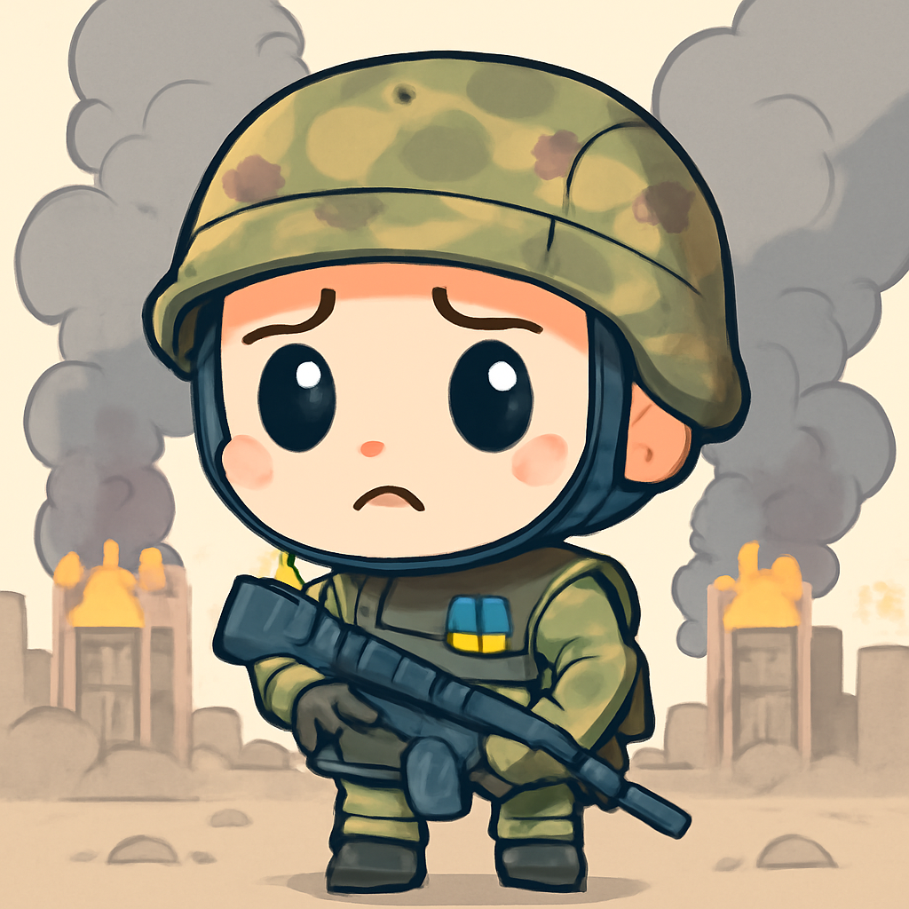
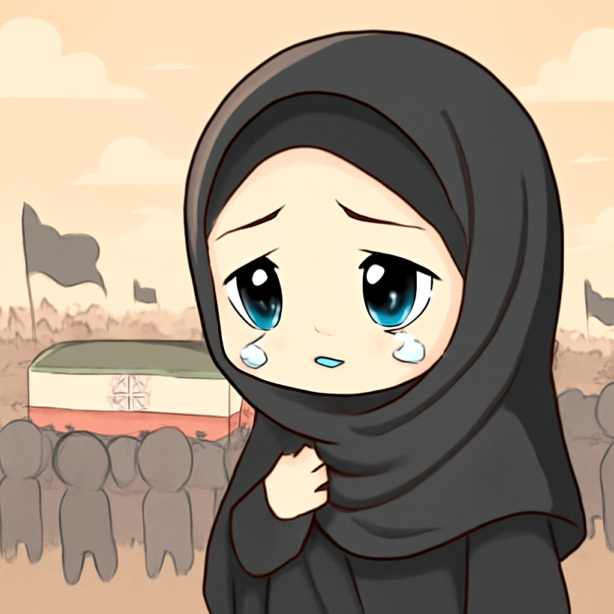
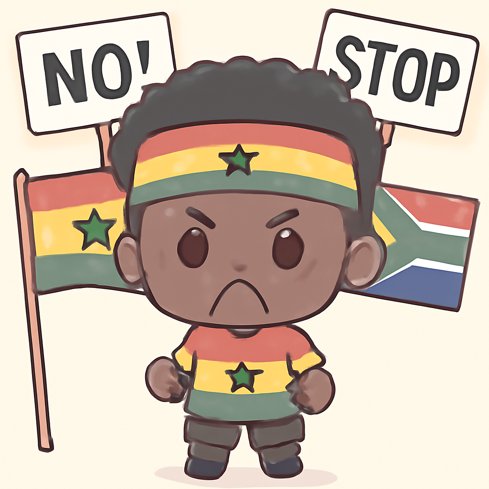
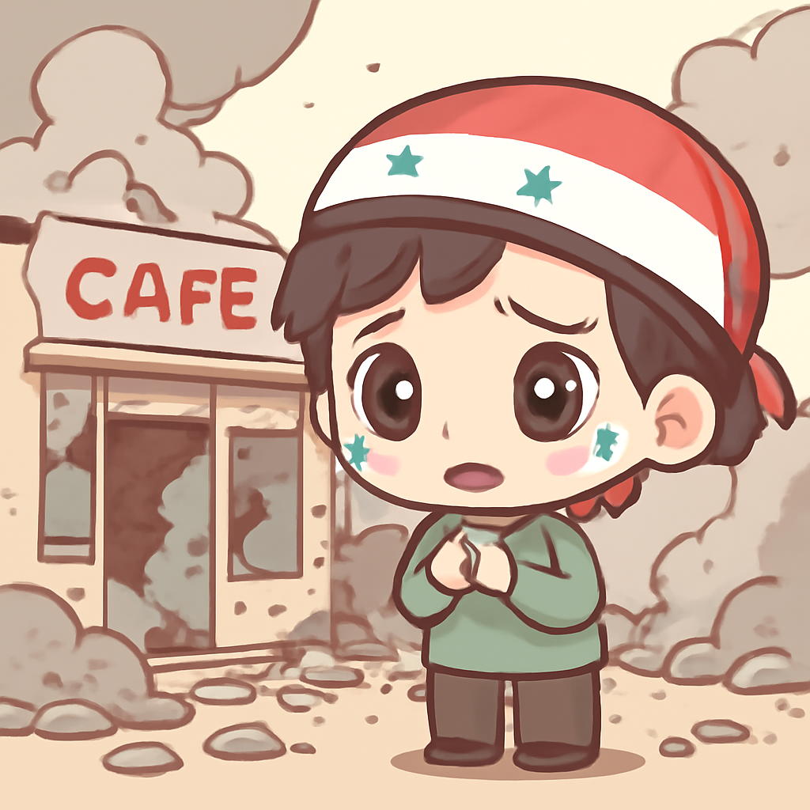

其一 · 烏克蘭基輔 · 俄羅斯大規模攻擊
俄羅斯對基輔發動大規模攻擊，造成27人死亡。

在烏克蘭基輔，俄羅斯最近發動了史上最猛烈的攻擊，至少27人喪生，造成的傷害遍及廣泛地區。這次攻擊不僅讓人擔心人道危機，還可能影響國際社會對俄的制裁力度，真是一個讓人不安的時刻。希望這場戰爭能儘快結束，大家都能平安。
🔗 原始新聞 ↗
2026-07-03 · 以古觀今，以笑抗愁
俄羅斯對基輔發動大規模攻擊，造成27人死亡。

在烏克蘭基輔，俄羅斯最近發動了史上最猛烈的攻擊，至少27人喪生，造成的傷害遍及廣泛地區。這次攻擊不僅讓人擔心人道危機，還可能影響國際社會對俄的制裁力度，真是一個讓人不安的時刻。希望這場戰爭能儘快結束，大家都能平安。
🔗 原始新聞 ↗
伊朗準備舉行最高領袖喪禮，影響政局走向。

伊朗的最高領袖哈梅內伊在戰爭初期遭到美以聯軍的攻擊而喪生，長期延遲的喪禮即將於本週五舉行。這對伊朗政權來說是一次關鍵時刻，能否成功展現其持續的穩定性將影響國內外的信心。希望他們能找到更好的解決方案，讓大家都能活得安心。
🔗 原始新聞 ↗
南非與加納因殺害移民事件爆發外交爭端。

南非最近因為一起移民抗議事件而引發與加納的外交糾紛，加納指控南非執法單位殺害了一名國民，南非則強烈否認。這不僅影響兩國關係，也可能影響到地區的穩定，真是讓人感到擔憂的事件，希望兩國能和平解決。
🔗 原始新聞 ↗
叙利亞咖啡館發生爆炸，造成六人死亡。

在叙利亞大馬士革，一家咖啡館發生爆炸事件，至少造成六人喪生，這起事件再次顯示該國持續的動盪不安。隨著國際社會持續關注叙利亞的情勢，希望能早日見到和平的曙光，讓市民安居樂業。
🔗 原始新聞 ↗
加拿大小男孩因被蝙蝠咬傷而死，令人痛心。
在加拿大，一名11歲的男孩因為醒來時發現蝙蝠在他臉上而感染了狂犬病，最終不幸去世。這是自1924年以來，加拿大第28例因狂犬病而亡的人，讓人感到震驚與悲傷。這提醒我們，保護自己和孩子的健康是多麼重要，尤其是在與野生動物接觸時。
🔗 原始新聞 ↗